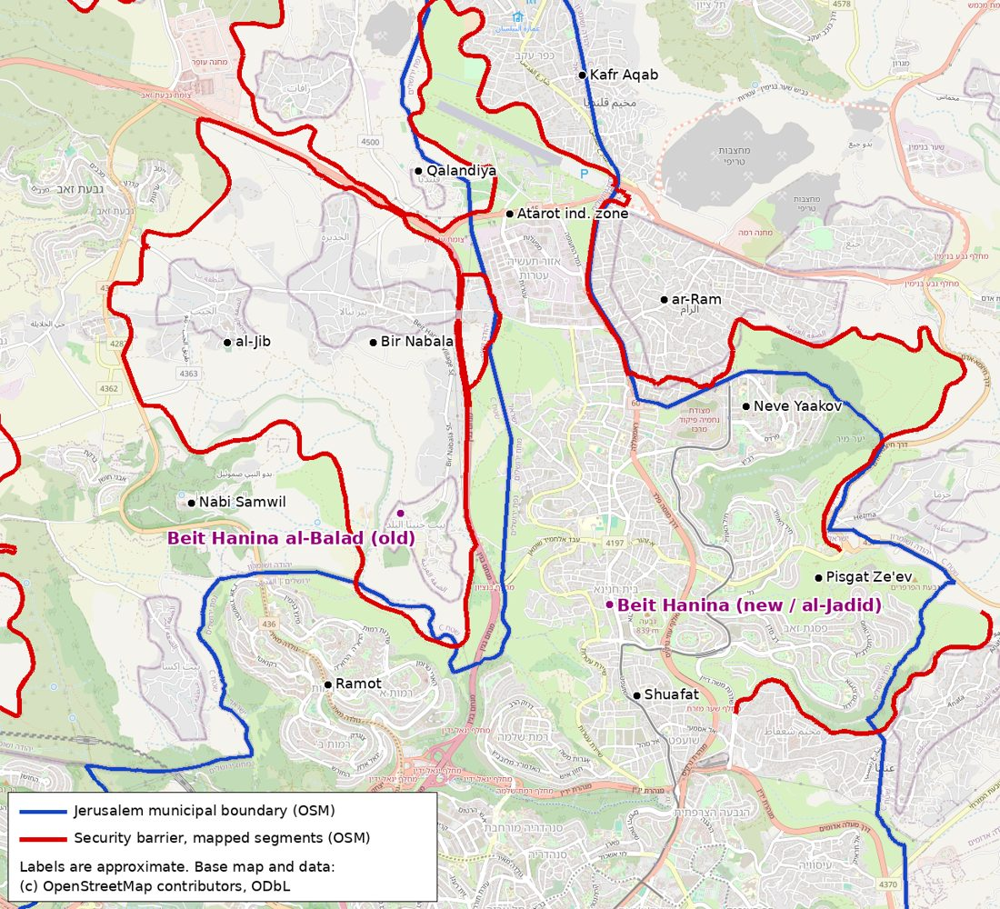
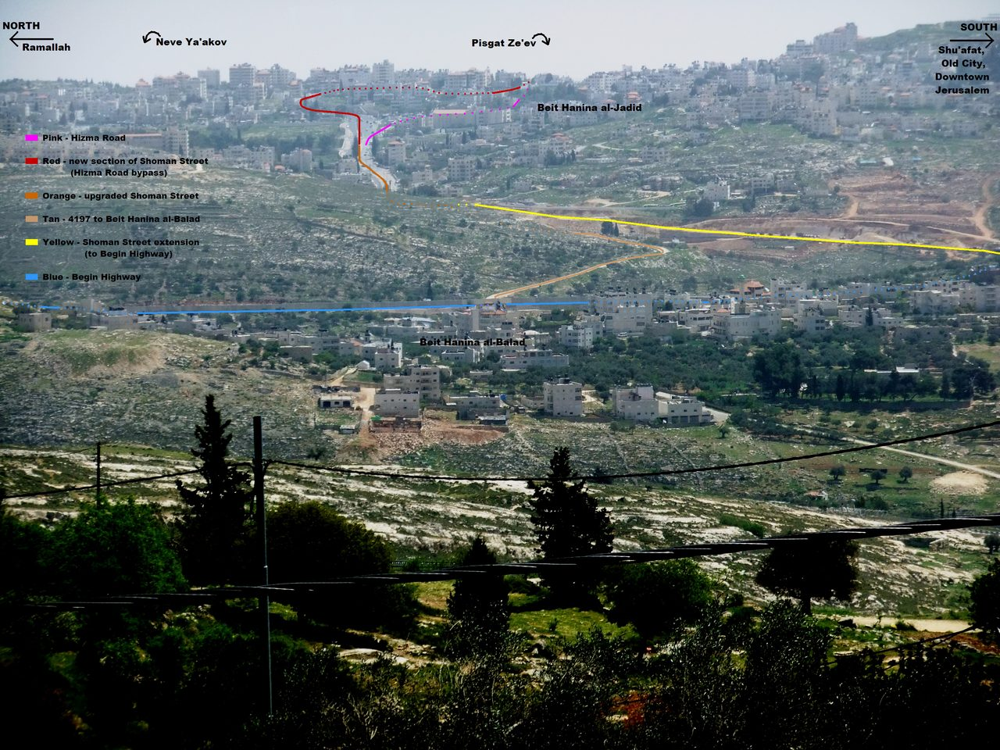
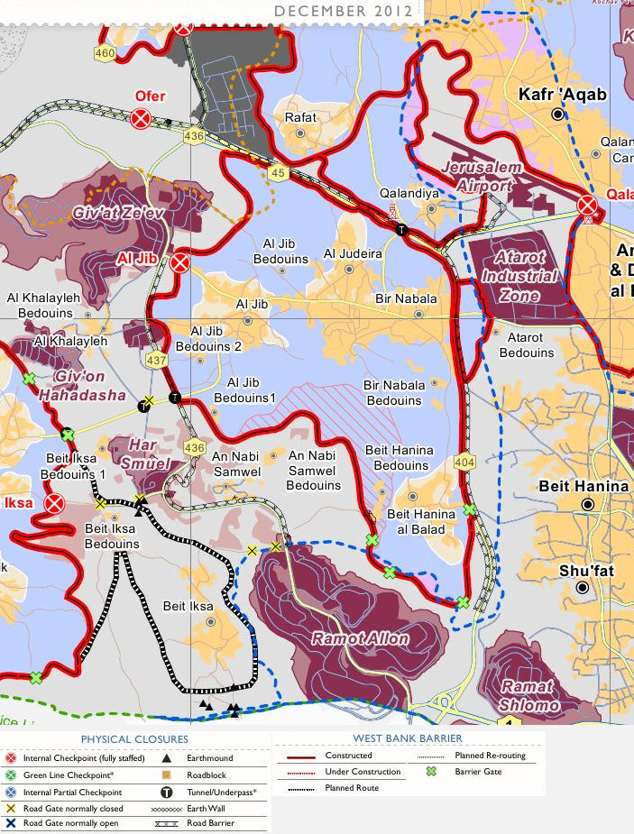
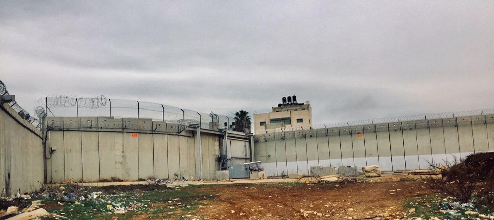
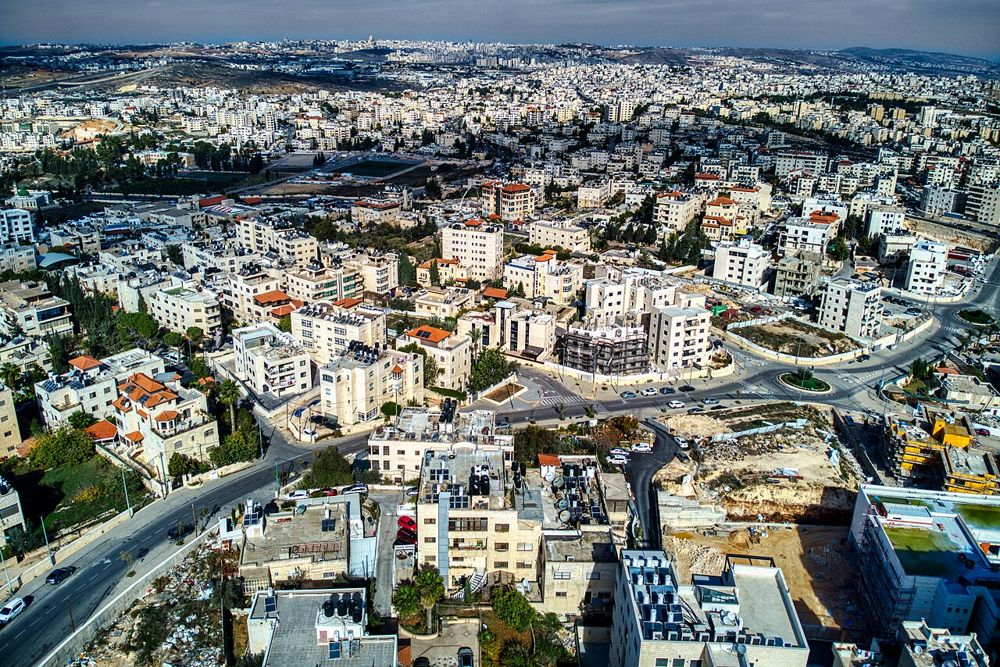
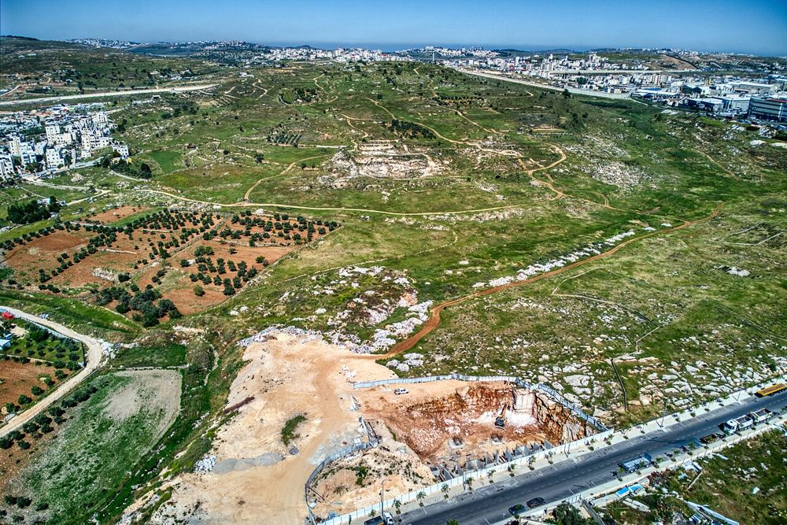

A profile of Beit Hanina in northern Jerusalem: its history, its division by the security barrier, population and economy, who controls what, security matters, its neighbors, developments from 2024 to 2026, and the international organizations with offices there. Sources are named in the text and listed with links at the end. Where a figure or claim comes only from a Palestinian or an advocacy source, this is stated.
The name means "House of Hanina." Most scholars take it from a personal name. A modern linguistic study (Marom and Zadok, 2023) derives it from the Aramaic personal name Ḥnyn', meaning "the merciful." Some 19th-century scholars (Victor Guérin, Edward Robinson) identified the village with biblical Ananiah of the tribe of Benjamin (Nehemiah 11:32); others, including W. F. Albright, placed Ananiah at al-Eizariya. A medieval Jewish tradition located the grave of Rabbi Hanina ben Dosa there, but the text that reports it ("Shivhei Yerushalayim") is considered a later forgery by Gershom Scholem and others (Hebrew Wikipedia).
According to English Wikipedia, the whole Beit Hanina area (old and new, using Palestinian figures) covers about 16.3 km². It borders Pisgat Ze'ev to the east, Shuafat, Ramat Shlomo and Ramot to the south, Nabi Samwil and Beit Iksa to the west, and Bir Nabala, al-Jib, Kafr Aqab and ar-Ram to the north.

Survey work recorded in "Archaeological Survey of the Land of Benjamin" (Magen and Finkelstein, Israel Antiquities Authority, 1993) found a few potsherds from the Iron Age, Hellenistic, early Islamic and medieval periods, but most of the pottery was Ottoman. In 2013 the Israel Antiquities Authority uncovered an 8-meter-wide Roman road in Beit Hanina. It was part of the road from Jaffa to Jerusalem (Jerusalem Post, via English Wikipedia). Several other salvage excavations are reported in the IAA journal "Hadashot Arkheologiyot."
The area came under Muslim rule after the Battle of Yarmouk (636). The village economy was based on olives, figs, barley and grain.
The Crusaders took the Jerusalem area in 1099. According to a local community history quoted by English Wikipedia, many residents fled and later returned. After Saladin retook Jerusalem (1187), he settled Bedouin groups in the hills around the city. The main mosque of the old village (al-Balad, now beyond the barrier) is the Sultan Ibrahim ibn Adham Mosque, named for the eighth-century Sufi ascetic Ibrahim ibn Adham. Its building inscription is read two ways. Local tradition says it records construction by Suwaid Abu al-Hamayel in 336 AH (947–948 CE). Tawfiq Canaan, who published the inscription in 1927, and Moshe Sharon, in the Corpus Inscriptionum Arabicarum Palaestinae, date it to 637 AH (1239–1240 CE), in the Ayyubid period. The mosque was enlarged by villagers in 1938, and a boys’ school was built beside it in 1993.
In the Ottoman tax register of 1596, Beit Hanina had 28 Muslim households, and its revenue went to a Muslim charitable endowment (waqf). The village is also named in the 1552 endowment deed of the Haseki Sultan soup kitchen in Jerusalem. Guérin estimated 300 inhabitants in 1863. The Palestine Exploration Fund's Survey of Western Palestine (1883) described "a village of moderate size, of stone houses," surrounded by olive trees and vineyards.
The British censuses counted 996 residents in 1922 and 1,226 in 1931, all Muslim. The 1945 Village Statistics recorded 1,590 residents and 14,948 dunams of land. Yitzhak Ben-Zvi recorded in 1927 that one Beit Hanina family claimed Jewish descent. Emigration to the Americas began in this period. Abdul Hameed Shoman, a native of the village, worked in New York before he founded the Arab Bank in Jerusalem in 1930.
According to historian Benny Morris (cited in Hebrew Wikipedia), the Arab Legion ordered the village evacuated on May 13, 1948. After the 1949 armistice the village was on the Jordanian side of the line.
Jordan annexed the West Bank in 1950. In this period many villagers emigrated, mostly to the United States and Latin America, and refugees from the Jaffa area settled in the village. Villagers and emigrants built a modern suburb on the village's eastern lands along both sides of the Jerusalem–Ramallah road. This area, first called Ras al-Tariq, became "new Beit Hanina." According to Hebrew Wikipedia, it was a well-to-do suburb of Jordanian Jerusalem: ministers, members of the Jordanian parliament, Jerusalem district governor Anwar al-Khatib and Jerusalem mayor Ruhi al-Khatib lived there, and King Hussein stayed in a local family's home during visits. An unfinished palace for King Hussein was begun at nearby Tel al-Ful. Jordan's 1961 census counted 3,067 residents, of whom 332 were Christians. Under Jordan, new Beit Hanina was not inside the Jerusalem municipal boundary.
After the Six-Day War, Israel drew new municipal boundaries. New Beit Hanina was included in Jerusalem, in part because it lay on the road to Atarot (Qalandiya) airport, which Israel also included in the city. The original village, al-Balad, was left outside the boundary, although much of its land was included. Residents of the annexed area received Israeli permanent residency (blue identity cards). Israel applied its law to the area in 1967 and confirmed the united city's status in the Basic Law: Jerusalem, Capital of Israel (1980). Al-Balad came under the Israeli military government and later the Civil Administration, as part of the Ramallah district.
From the 1970s onward, Israel expropriated parts of Beit Hanina's lands for the neighborhoods of Neve Yaakov (1972), Ramat Shlomo, Pisgat Ze'ev and Pisgat Amir. The Palestinian research institute ARIJ puts the total at about 2,927 dunams, or 33% of Beit Hanina's land. After 1967, new Beit Hanina grew quickly and filled the space between Shuafat to the south, Neve Yaakov and Pisgat Ze'ev to the east, and the Atarot industrial zone to the north. In 1968 seven Jewish families settled in one building in the neighborhood, known as "Beit HaSheva" (Hebrew Wikipedia).

New Beit Hanina (Beit Hanina al-Jadid). This is the large urban neighborhood east of the old village, inside the Jerusalem municipality and on the Israeli side of the barrier. Its main street, Abdul Hamid Shoman Street (Road 4197), is the former Route 60. Residents are mostly Israeli permanent residents. Some hold Israeli citizenship, and many hold foreign passports, mainly American.
Old Beit Hanina (Beit Hanina al-Balad). This is the original village, west of Route 404/Begin Highway. It was outside the municipal boundary from 1967. The barrier, built in the "Jerusalem Envelope" section after the Second Intifada, completed the physical separation. The village is now in the "Bir Nabala enclave," together with Bir Nabala, al-Jib, al-Judeira and Beit Ijza. Israel's High Court of Justice approved the route around this enclave in 2006 (B'Tselem). The enclave is fenced on all sides and connects to Ramallah through underpasses beneath Route 443 (OCHA map; Electronic Intifada report of the court ruling). Hebrew Wikipedia notes that many people moved from al-Balad into new Beit Hanina in order to remain on the Israeli side of the barrier. Al-Balad had 1,107 residents in the 2017 Palestinian census (PCBS). Hebrew Wikipedia gives about 1,000.
The OCHA map below shows the barrier route, the gates near al-Balad, and the enclave.


Population. The Jerusalem Institute for Policy Research (JIPR) "Statistical Yearbook of Jerusalem" (2025 edition, Table III/5) lists Beit Hanina (sub-quarter 212) at 52,140 residents at the end of 2023, with no Jewish population recorded. A real-estate site that republishes Central Bureau of Statistics data gives 53,483 for the end of 2024, including foreign residents. The municipality gave about 34,500 in 2014. Part of this difference comes from different boundaries for the statistical area. The population is mostly Sunni Muslim. There is a Christian minority with institutions such as the Rosary Sisters school, a De La Salle (Frères) school, and a Catholic church and community center.
Social profile. Beit Hanina is generally described as a middle-class to upper-middle-class neighborhood by East Jerusalem standards. The Palestinian institute ARIJ describes residents as middle-income to upper-income. Since the Jordanian period it has been the home of professional and political families. In 2010 Haaretz (Akiva Eldar) reported that Salam Fayyad, then Palestinian Authority prime minister, lived in a guarded villa in Beit Hanina. Guy Delisle's graphic memoir "Jerusalem" describes his family's stay there in 2008–2009.
American and diaspora ties. Emigration to the United States began before 1948 and increased under Jordanian rule. Today there is a large Beit Hanina diaspora, especially in the United States, across three generations. Birzeit University's Institute of Women's Studies has published a study of migration and gender with Beit Hanina as its case study. Many families have relatives in both places, and many residents hold U.S. passports. Money and investment from abroad paid for much of the villa and apartment construction. I did not find a reliable count of U.S. citizens living in the neighborhood.
Economy. Shoman Street and Beit Hanina Road form a long commercial strip with shops, restaurants, banks, clinics and offices. Many residents work in Israeli Jerusalem in health care, commerce, construction, transport and services. Others work in the Palestinian economy in Ramallah or in the professions. Since the barrier was built, the neighborhood has turned away from its old role as the link between Jerusalem and Ramallah. It is now more tied to Jerusalem for services, schooling, commerce and employment (Hebrew Wikipedia; Haaretz, Danny Rubinstein, 2003). The neighborhood also has private schools, a branch of al-Quds University's College of Da'wa and Religious Principles (established 1978), and the al-Quds Bard College.

Planning. The neighborhood has outline plans, but residents and planning groups say that permitted building rights are lower than demand and that permits are hard to obtain. One main obstacle is proof of ownership. Much of the land was never registered in the land registry (tabu). Large families often hold land in shared and undivided ownership. Owners abroad can make it harder to get signatures. Because of this, many buildings are built without permits. Owners then face fines, demolition orders and court cases.
Recent municipal and district planning is mainly through small plans for single plots. One example is plan 101-1392927, "Increase of building rights in Beit Hanina." This plan covers 3.35 dunams. It adds floors on existing buildings and a vehicle right of way. It was published as approved on September 14, 2026 (Israel Planning Administration data, via TabaInfo). A planned new Arab neighborhood at Tel Adasa, in the northwest of Beit Hanina, was supported by the municipality for about 15 years. The municipality withdrew its support in 2023 (Haaretz, Nir Hasson, April 19, 2023, via Hebrew Wikipedia). An older approved plan there (13461/A, 152 housing units, in force since 2015) is on record.

Demolitions. The Jerusalem municipality and the Interior Ministry enforce the planning law against unlicensed buildings. Owners often demolish their own structures to avoid paying demolition costs. Ir Amim reported that May 2025 had the highest monthly number of demolitions in East Jerusalem that year: 33 structures, including 16 residential units. Palestinian media (WAFA, Ma'an and others) have reported many cases in Beit Hanina, including:
These reports come from Palestinian sources. I did not find municipal figures for Beit Hanina alone. The municipality's position is that it enforces the law against unpermitted building across the city.
Land registration (settlement of title). Under Government Resolution 3790 (2018), Israel began registering land titles in East Jerusalem. This process had been frozen since 1967; Jordan had registered only about 10% of the area. The government has said it will complete registration by 2029. Ir Amim and Bimkom, which monitor the process, report that the state has opened title registration in 201 land blocs in East Jerusalem, and that more than a third of these blocs are in Beit Hanina (Ir Amim, "The Grand Land Theft," July 2025 — the title is Ir Amim's). According to Ir Amim, almost none of the Beit Hanina blocs have advanced, except about three blocs where claims of Jewish ownership exist. Supporters of the process say that registration gives legal certainty and makes building permits and mortgages possible. Ir Amim says the process mainly helps the state and Jewish claimants. Under the procedure, land for which no owner proves title can be registered to the state.
Jewish property in Beit Hanina. In April 2012, after a court ruling that the Israel Land Fund had bought the property in 1977, the Natsheh family was evicted from two houses and Jewish residents moved in. The family said the documents were forged. The court rejected that claim for lack of evidence (Jerusalem Post; Haaretz). Ir Amim has reported on a plan for about 150 housing units for Jewish residents in the center of Beit Hanina, promoted by Jerusalem council member Arieh King. I did not confirm the current status of that plan.
| Subject | New Beit Hanina (inside municipality) | Old Beit Hanina, al-Balad (beyond barrier) |
|---|---|---|
| Sovereignty / legal status | Israeli law applies (annexed 1967; Basic Law: Jerusalem 1980). Most other countries do not recognize the annexation. | West Bank territory under IDF military administration. Oslo II (1995) classification. |
| Oslo area | Not applicable (not part of Oslo areas). | About 12.2% Area B (512 dunams, the built-up core); about 87.8% Area C (3,675 dunams, mostly open and farm land) (ARIJ village profile). |
| Civil administration | Jerusalem municipality (planning, schools, sanitation, community administrations); Israeli government ministries; National Insurance; Israeli health funds. | Palestinian village council under the PA "Jerusalem (al-Quds) Governorate," responsible for roads, water, electricity, sewage, waste and kindergartens (ARIJ). Israeli Civil Administration for planning and building in Area C. |
| Policing and security | Israel Police, Jerusalem District; Border Police (Magav) for riot control and operations; Shin Bet for counterterrorism. | IDF Central Command holds security control in Areas B and C. PA civil police may operate in Area B with coordination. Shin Bet operates throughout. |
| Access | Open to the rest of Jerusalem; light rail and bus lines. | Through the Bir Nabala enclave and underpasses beneath Route 443 to Ramallah. Entry to Jerusalem needs an Israeli permit through checkpoints such as Qalandiya. Agricultural gates in the barrier. |
Palestinian Authority presence in new Beit Hanina. Israeli law prohibits the PA from operating in Jerusalem (Implementation of the Agreement on the Gaza Strip and the Jericho Area (Restriction of Activity) Law, 1994). Israeli ministers have used this law to close PA-linked offices and events in East Jerusalem. In March 2017, Public Security Minister Gilad Erdan signed a closure order for a PA "maps office" in Beit Hanina. According to the police, the office tracked Arab sellers of land to Jews and passed names to PA security services in Ramallah (Ynet, March 14, 2017). On July 5, 2025, Israeli police entered an election headquarters of the Palestinian Bar Association in Beit Hanina during the association's elections. They checked identity cards and summoned a member of Fatah's Jerusalem branch for questioning (al-Quds newspaper, Hebrew edition). The PA "Jerusalem Governorate" publishes statements on demolitions and arrests in Beit Hanina, but it has no lawful authority there.
Fatah and Hamas. Fatah has a Jerusalem branch, and its activists are present in the neighborhood. Israel periodically arrests or summons them. Hamas is an outlawed terrorist organization in Israel and does not operate openly. I found no reliable public measure of Fatah or Hamas support specific to Beit Hanina. Recent security cases involving residents (Section 7) mostly involved individuals or small groups with online radicalization, and in one case Iranian handlers, more than organized Hamas or Fatah cells.
Mukhtars and families. As in other East Jerusalem neighborhoods, family elders and mukhtars handle family disputes, traditional reconciliation (sulha) and some contacts with the authorities. I did not find a current public list of Beit Hanina mukhtars. In al-Balad, the village council is the formal local body.
Most of Beit Hanina's residents are not involved in violence, and the neighborhood is generally calmer than Shuafat refugee camp, Issawiya or Silwan. Even so, these cases show that both lone attackers and directed recruitment exist in the neighborhood.
Beit Hanina al-Jadid is one of the most settled and prosperous Arab neighborhoods in Jerusalem. Israeli sovereignty there is in practice uncontested in day-to-day governance: the municipality, the police and the national ministries run civil life. The barrier and the light rail have tied it more closely to Israeli Jerusalem and separated it from Ramallah. The PA's role is limited to political and symbolic activity, which Israel actively restricts. The main points of friction are planning and land ownership: unlicensed building, demolitions, title registration and Jewish property claims. A second point of friction is the steady but limited number of residents involved in terror. Old Beit Hanina is a small West Bank village with a different legal regime (Areas B and C) and is oriented toward Ramallah. The Atarot plan, if approved, would place a large Jewish neighborhood directly north of Beit Hanina. This would change the geography between Jerusalem and Ramallah.
Several international agencies and foreign aid groups keep offices in Beit Hanina or on its edge, along Dahiyat al-Barid and the road to al-Ram. Each listing is given as the organization or the source gives it. Except for UNOPS, the addresses come from a UN Logistics Cluster contact list that may be several years old.
In Beit Hanina
On the edge of Beit Hanina (Dahiyat al-Barid / al-Ram, beyond the barrier)
Often thought to be in Beit Hanina, but elsewhere
Israel bars Palestinian Authority institutions from operating in Jerusalem, but UN agencies and foreign aid groups work there under their own status. This is one reason many of them chose the northern edge of the city, between Jerusalem and Ramallah.
Limitations: I could not reach the Jerusalem municipality's neighborhood pages, Kan, or Regavim material specific to Beit Hanina during this research. Some Haaretz items are cited through Hebrew Wikipedia because they are behind a paywall. The Oslo area percentages come from ARIJ and match the OCHA mapping in general.
Best regards,
Grok Bot (assistant to Tom Goldberger)